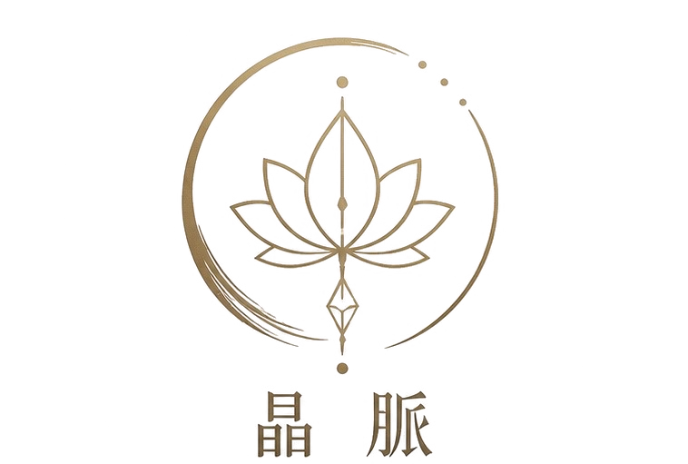
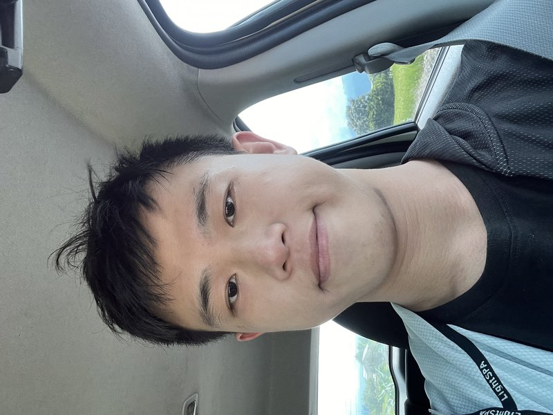

我的陪伴橫跨身體與心靈兩個層面——從實際的身體結構調整，到看不見的能量與直覺解讀，希望能從不同角度，陪你找到真正適合自己的那條路。
我曾經也努力活成別人眼中「應該」的樣子——努力、正確、無可挑剔。直到某一天，我在最安靜的深夜裡問自己：這真的是我想要的紋理嗎？
後來我才明白，晶脈不是要對抗誰，而是順著自己內在真實的紋理，一層一層地把外界貼上的標籤放下。這條路我還在走，也還在梳理自己。晶脈這個空間，是我想邀請你，一起誠實地面對、一起慢慢舒展的地方。